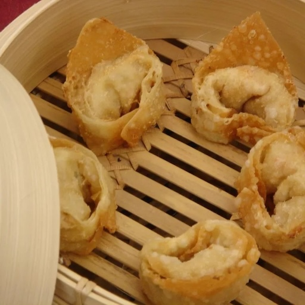

Crabby Cream Cheese Wontons

Description
Wonton wrappers are filled with cream cheese, crab meat (I use imitation, but you can use either), garlic, and onions. You just have to heat them so the cheese is melted hot. Don't overcook. Serve with rice and sweet and sour sauce. Good as an appetizer, or meal.
ingredients
- 1 quart oil for deep frying
- 2 (8 ounce) packages cream cheese, softened
- 1 (12 ounce) package imitation crabmeat
- 2 tablespoons soy sauce
- 2 teaspoons sesame oil
- 1 tablespoon minced garlic
- 3 tablespoons Worcestershire sauce
- 1 bunch green onions, finely chopped
- 1 (14 ounce) package wonton wrappers
- 2 egg whites
Steps
- Heat oil in a large, heavy saucepan to 375 degrees F (190 degrees C).
- In a medium bowl, mix together cream cheese, imitation crabmeat, soy sauce, sesame oil, garlic, Worcestershire sauce and green onions.
- Place approximately 1 teaspoon of the cream cheese mixture in the center of each wonton wrapper.
- Place egg whites in a small bowl. Using the fingers, spread egg white over two edges of the wonton wrappers. Fold into triangles and press to seal edges.
- In small batches, deep fry the wontons until golden brown, 2 to 4 minutes. Drain on paper towels and serve warm.